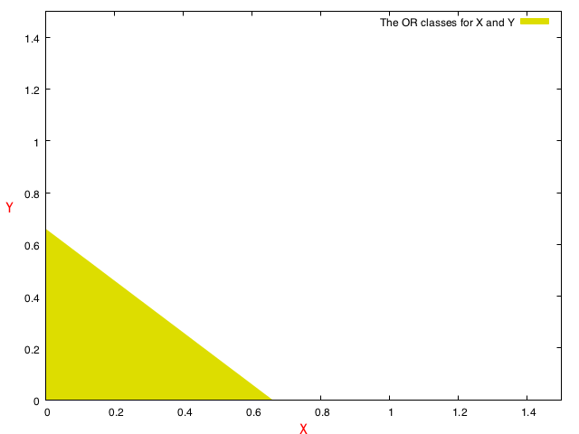
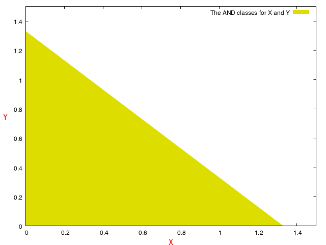

A Neural Network Primer
Neural networks are a fascinating topic. And it's meta, because we as biological neural network organisms have attempted to model understanding our own selves using the field of artificial neural networks.
While this article uses neural networks as the primary topic to focus on, much of the article applies to the topic of machine learning too.
Let's get started…
How would you explain machine learning in very simple terms? It's not hard, but it will help to first clarify what exactly do we mean by machine learning. It's about humans attempting to make machines mimic human behaviour. But, that's still quite broad.
How do we answer the following questions?
- What is 2 + 2?
The answer to "2 + 2" is easy for a machine provided the machine is custom-built for arithmetic and the input is cleanly fed into the machine. (Calculators, anyone?) But, the same question fed into a general purpose machine would need a lot more machinery to give you the right answer - 4 in this case.
It's just a function…
A function is loosely something that transforms an input (the domain) into an output (the range).
We'll
A neuron is a computing unit – a function that acts on its input to compute an outcome. It discerns between different inputs and slots them into some categories. Mostly, two categories. Given some input, it either decides to stay inert, or fire a signal for the next-in-line neurons to consume as their input. (I'm obviously simplifying here…)
That's akin to a simple function which outputs either a 0 or a 1.
So, let's consider the following table, where x and y are inputs, and z is the output. f(x, y) = z
| x | y | z |
|---|---|---|
| 0 | 0 | 0 |
| 0 | 1 | 1 |
| 1 | 0 | 1 |
| 1 | 1 | 1 |
This is an OR table. We didn't need much time to recognize that, did we? But, how did we exactly recognize the pattern so quickly? It turns out to be a simple question with a very non-trivial answer. But a simple view is that we we invoke contextual memory ("Ah, look. Boolean values!"), then recall some rules (happens to be the OR operation on two binary values), and then apply those rules.
OR, AND, NOT, XOR — we can deal with those naturally, as programmers or people who have studied logic. Let's take this forward.
Getting somewhat bit real
While we stick to the popular binary operations just yet, let's consider what the implementation of these operations might look like in algebraic equation terms of inputs x and y, where we allow x and y to be real numbers. Here's an educated guess.
z := (1.5 * x + 1.5 * y >= 1.0)| x | y | z |
|---|---|---|
| 0 | 0 | 0 |
| 1 | 0 | 0 |
| 0 | 1 | 0 |
| 1 | 1 | 1 |
How about a similar guess for AND?
z := (0.75 * x + 0.75 * y >= 1.0)You'll notice without any prodding how similar the two linear equations are for OR and AND. In fact, let's look at another configuration for OR
z := (0.75 * x + 0.75 * y >= 0.74)So, AND and OR are almost the same, except for the discriminant — the straight line that is described by the equation — in the chosen formulation above.
It's a straight line in 2-D. By extension, will be a 2-D plane-surface in 3-D. And so on. Some boundary that divides the space it is embedded in into two disjoint spaces.
The insight here is that both the functions are similar and map their inputs to opposite sides of some discriminant. Only that the discriminants are translated, while sharing the same slope. Here's how the 0 and 1 classes would be separated, if drawn on a graph.
Having the same slope is just incidental given our arbitrary choice of representation. The slopes can very well be different, and depend on multiple factors including what example datasets we work with.
 
The different-colored backgrounds correspond to the two values of z
Advancing our observation further - you'll notice that with the above decision functions, our inputs need not be just the binary values 0 and 1, but can take up some fuzziness and be real values. As long as they
stay within some acceptable ranges, passing them to the above functions will give us outcomes we will fuzzily agree with. The outcome is either class 0 or class 1.
And, the neural network?
The and and or functions classify their inputs into two groups. What we have above is an absolutely naïve classifier — a classifier that we understand the internals of enough to represent them as those equations above. We encoded what we already knew into those functions.
The premise of (artificial) neural networks is to save us from the trouble of finding specific solutions for really arbitrary problems. Just like humans learn and acquire new knowledge and skills. Imagine if we fed the above truth tables to a black box, with x and y as our input, and z as the expected outcome. And in turn, this black box learnt the rules and then readied itself to respond with z values for any combination of x and y we threw at it?
Not hard, right? We could cache all combinations of the input and corresponding output, and respond back with the right values. That's eminently doable for the small size of the training dataset we have. But it breaks down miserably when we unconstrain the input values (add some noise), or even deal with unforeseen input values that are different from the training data by wider margins.
As a first step towards creating such an entity, we can approximate the black box as a linear regression. And training it as an activity of solving this linear regression. The general equation looks as follows, for the two input-signal scenario
z := (w0 x + w1 y >= c)
Or, making it somewhat more general and rearranging terms to be one one side
z := (c + Σwi·xi >= 0)
Which can again be re-written more generally as
Z := (c + WT·X >= 0)
Where W and X are the weight and input matrices respectively. So, we could imagine this single neuron that
References
- A Neural Network Primer - by David W. Croft
Preface/Purpose
I chanced upon this primer from the 90s, on artificial neural networks, and thought it might be a good idea to write something similar.